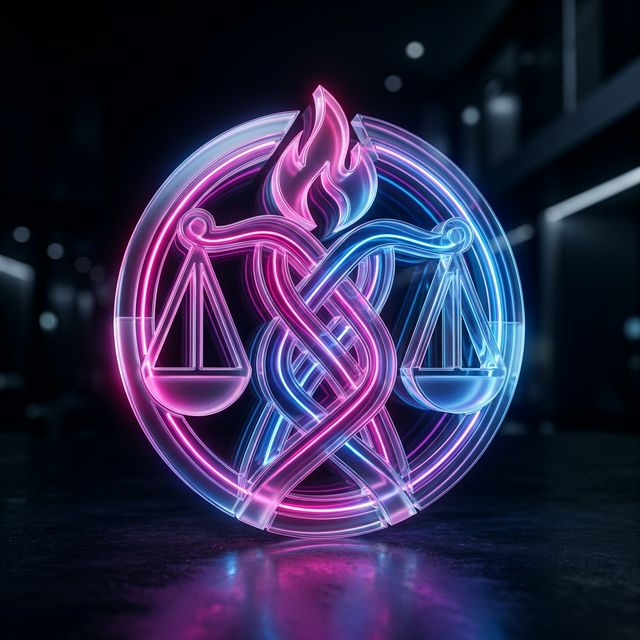

Tecnologia e humanidade convergem aqui para uma nova era de respeito, dignidade e celebração da diversidade.
Este portal foi desenvolvido como uma ferramenta de conscientização e educação. Nosso objetivo é lançar luz sobre temas críticos como o feminicídio, combater todas as formas de violência contra a mulher e promover o respeito à diversidade LGBTQIA+. Acreditamos que a informação é o primeiro passo para a construção de uma sociedade mais justa e segura para todos.
Entender é o primeiro passo para respeitar. Conheça as identidades que compõem nossa comunidade.
Lésbicas: Mulheres que sentem atração por outras mulheres.
Gays: Homens que sentem atração por outros homens.
Bissexuais: Pessoas que sentem atração por mais de um gênero.
Trans: Pessoas cuja identidade diverge do sexo biológico.
Queer: Pessoas que transitam entre os gêneros.
Intersexo: Características fora do binário biológico.
Assexuais & +: Inclui Pan, Não-Binários e outros.
Respeitar a diversidade significa reconhecer que cada ser humano tem o direito de ser quem é, amar quem quiser e expressar sua identidade com liberdade.
A discriminação gera exclusão e violência. Combater o preconceito é um dever coletivo para garantir que espaços públicos e privados sejam seguros para todos.
Igualdade não é apenas um conceito jurídico, mas a prática diária de oferecer as mesmas oportunidades e dignidade, independente da orientação sexual ou identidade de gênero.
Dados alarmantes mostram a urgência de combater o preconceito e a discriminação diariamente no Brasil.
A nação brasileira é o país que mais mata pessoas trans no mundo há 15 anos consecutivos.
A cada 34 horas, uma pessoa LGBTQIA+ é morta de forma violenta ou por suicídio no Brasil.
É a expectativa de vida média de uma pessoa trans no Brasil (metade da expectativa nacional).
dos estudantes LGBTQIA+ relatam já ter sofrido algum tipo de bullying e violência nas escolas.
das empresas brasileiras ainda demonstram resistência ou evitam contratar pessoas LGBTQIA+.
Há aumento preocupante de discursos de ódio online, que acabam impulsionando a violência física.
A história da comunidade LGBTQIA+ é uma história de resistência e conquistas contínuas.
Stonewall Inn: Marco inicial do orgulho e resistência.
A Bandeira: Gilbert Baker cria o símbolo de união universal.
OMS: Fim da homossexualidade como doença mental.
STF Brasil: Reconhecimento jurídico da união estável.
Visibilidade Trans: A luta por leis de identidade e contra a transfobia.
Para a Sociologia, a violência contra a mulher não é um evento isolado, mas o resultado de uma desigualdade estrutural profunda. Entender a sociedade é entender os mecanismos de poder que perpetuam essa realidade.
Um sistema social milenar onde o poder, o prestígio e o controle são concentrados nas mãos dos homens. Ele estabelece uma hierarquia de gênero que naturaliza a subordinação feminina e legitima a violência como forma de controle.
Diferente do preconceito individual, o machismo estrutural é um "fato social" (conceito de Durkheim). Ele está infiltrado nas leis, na economia, na linguagem e na cultura, agindo de forma imperativa e coercitiva sobre a vida das mulheres.
A violência é a ferramenta extrema para manter a desigualdade. Quando mulheres buscam autonomia ou desafiam papéis tradicionais, o sistema patriarcal reage através da agressão para "reestabelecer a ordem" de dominação masculina.
O feminicídio é o topo da pirâmide da violência. Não é um crime "passional" ou por "amor", mas um assassinato baseado no desprezo pela vida da mulher.
Tipificado pela Lei 13.104/15, ocorre quando o crime envolve violência doméstica e familiar ou menosprezo à condição de mulher. Diferencia-se do homicídio comum por ser um crime de ódio de gênero.
A série brasileira "Bom Dia, Verônica" mergulha nas profundezas alarmantes da violência contra a mulher. Uma história necessária sobre patriarcado estrutural e a luta por justiça.
Assistir ao TrailerA Lei Maria da Penha (Lei 11.340/06) define 5 formas principais de agressão que toda mulher deve saber identificar:
Qualquer conduta que ofenda a integridade ou saúde corporal da mulher (socos, apertos, arremesso de objetos).
Isolamento, humilhação, vigilância constante, perseguição e o "gaslighting" (distorcer fatos para afetar a sanidade da vítima).
Constrangimento a presenciar ou participar de relação sexual não desejada, mesmo em relações conjugais/casamento.
Retenção de documentos, destruição de instrumentos de trabalho, controle tirânico das finanças ou quebra de celular.
Calúnia, difamação ou injúria. Ataques à honra e reputação da mulher perante amigos, família ou sociedade.
Os dados mais atuais do Fórum Brasileiro de Segurança Pública mostram que a violência de gênero atingiu níveis recordes.
feminicídios registrados em 2024, o maior número da série histórica no Brasil.
das vítimas de feminicídio em 2024 eram mulheres negras, expondo o racismo estrutural.
dos crimes foram cometidos por parceiros ou ex-parceiros das vítimas.
A média permanece trágica: no Brasil, uma mulher é morta por feminicídio a cada 6 horas.
vítimas tinham medidas protetivas ativas no momento da morte, mostrando falhas no sistema.
das vítimas eram mães, deixando milhares de órfãos do feminicídio anualmente.
"O feminicídio não é um ato de loucura, mas o desfecho de um processo educativo de dominação masculina."
Fonte: Fórum Brasileiro de Segurança Pública (2024/2025)
O feminicídio é o ápice do ódio contra a existência feminina.
Se você ou alguém que você conhece está sofrendo violência, peça ajuda.
Ligue 180 (Brasil)Não se cale. A ajuda está a apenas uma ligação de distância. Denunciar é um ato de coragem e proteção.
Central de Atendimento à Mulher

Trabalho Acadêmico de Sociologia - 2026.